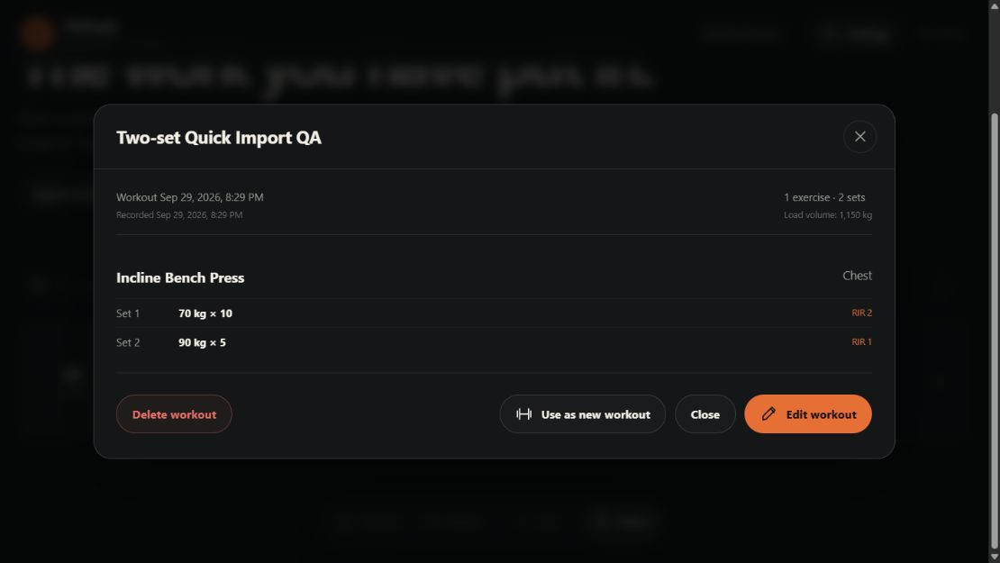
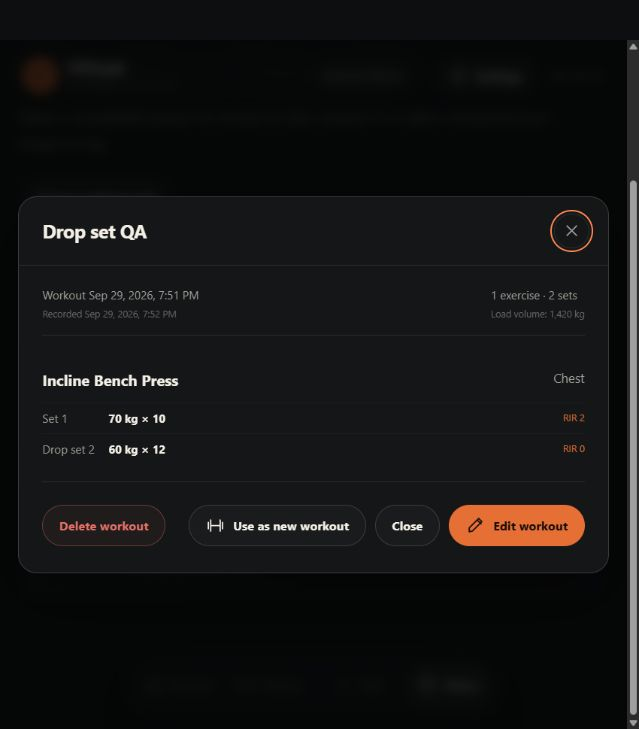
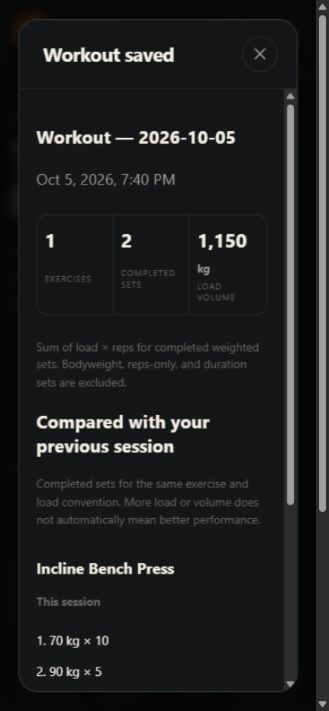
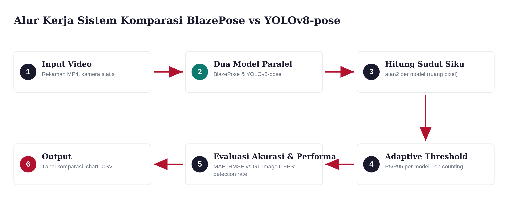
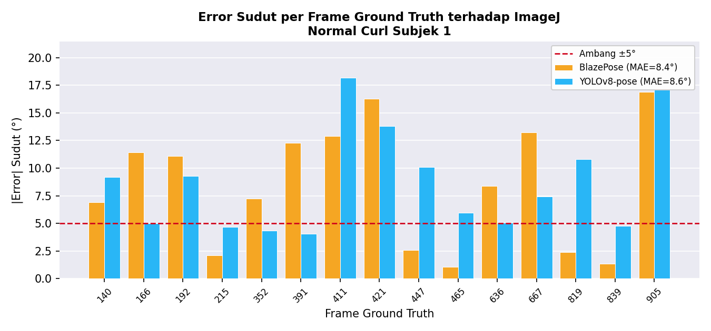
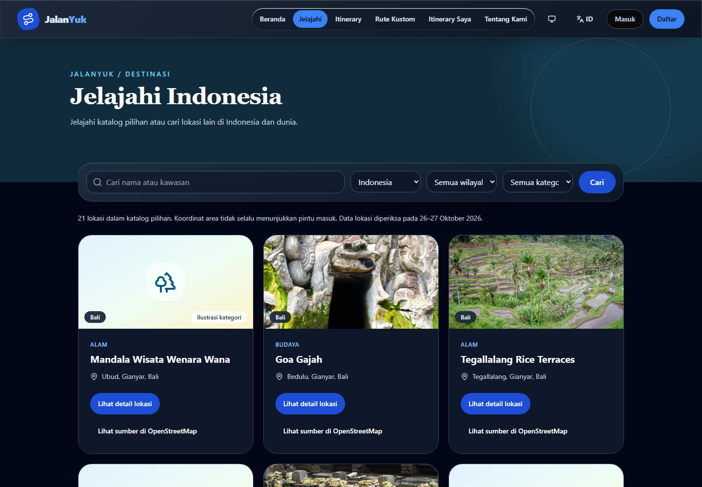
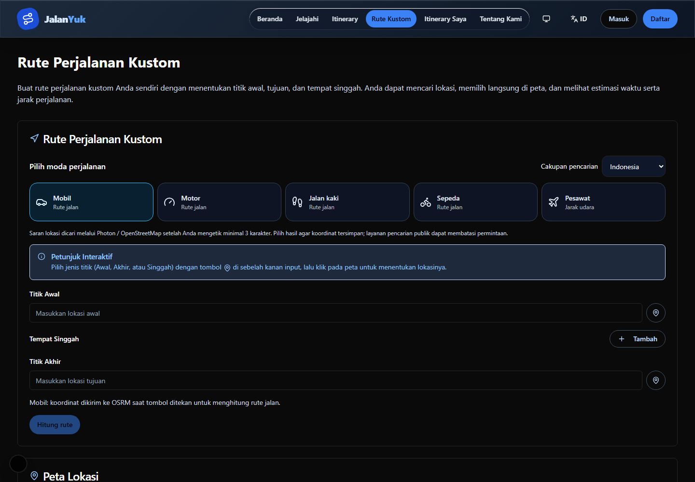
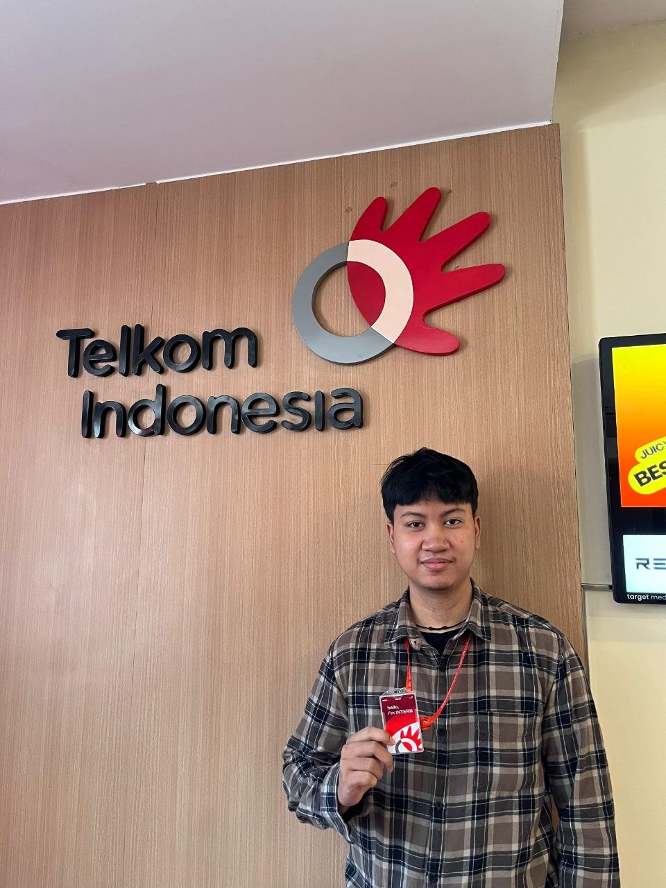

Strukturkan
Mengubah data mentah atau tidak terstruktur menjadi informasi yang siap dianalisis.
Tersedia untuk peluang kerja
Junior Data Analyst · Bekasi, Jawa Barat
Saya Henry Abimanyu Dewandani. Saya mengolah log, mengevaluasi model, dan membangun visualisasi agar informasi yang rumit dapat diperiksa, dibandingkan, dan digunakan untuk mengambil keputusan.
Pilih karya
Mulai dari proyek yang paling dekat dengan kebutuhan Anda. Setiap studi kasus menjelaskan kontribusi dan batasannya.
01 / Profil
Pengalaman saya bergerak dari log operasional hingga data gerakan tubuh. Polanya sama: memahami konteks, merapikan informasi, memilih ukuran yang tepat, lalu menyajikan hasil yang dapat ditelusuri kembali.
Mengubah data mentah atau tidak terstruktur menjadi informasi yang siap dianalisis.
Menggunakan metrik yang relevan, termasuk MAE dan RMSE untuk evaluasi model.
Menyusun dashboard, grafik, dan ringkasan agar temuan mudah diperiksa.
02 / Studi kasus
Empat studi kasus berikut menunjukkan cara saya menangani data produk, evaluasi model, pencarian lokasi, dan monitoring operasional.
Live product
Product analytics
Aplikasi pencatatan latihan yang berkembang menjadi produk analitik untuk membantu pengguna membaca progresnya sendiri—bahkan ketika bekerja secara offline.



Model evaluation
Computer vision analysis
Pipeline Python untuk membandingkan MediaPipe BlazePose dan YOLOv8-Pose terhadap pengukuran manual ImageJ pada video bicep curl.
repetisi terdeteksi oleh BlazePose pada skenario terpilih yang dicatat di CV.


Prototipe
Data lokasi & produk
Prototipe perencana perjalanan yang menggabungkan katalog destinasi, pencarian tempat, dan penyusunan rute. Tantangannya adalah menjaga asal dan identitas lokasi tetap jelas saat hasil katalog bercampur dengan hasil pencarian.


Internal system
Log & observability
Mengolah log ITGC dan Kubernetes menjadi data terstruktur serta dashboard Kibana untuk kebutuhan monitoring operasional dan alur audit.

Batas publikasi. Materi, nama host, data, dan tangkapan layar sistem internal tidak ditampilkan karena tidak ada izin publikasi.
03 / Jejak
Fondasi teknis Informatika yang dipertemukan dengan praktik monitoring dan analisis data.
Jul–Agu 2025
Pengalaman
Data Analyst Intern, DIT-INE
2022–Sep 2026
Pendidikan
S1 Informatika · IPK 3,21/4,00
Tugas akhir membandingkan MediaPipe BlazePose dan YOLOv8-Pose untuk analisis gerakan bicep curl berbasis video.
2026
Pelatihan
Yayasan Indonesia Emas Merdeka · masih berjalan
Mempelajari dasar kecerdasan buatan dan penerapannya pada layanan AWS. Status program mengikuti CV terbaru.
Pembelajaran tambahan: pengenalan data science, cloud computing, dan rekayasa prompt dengan Azure OpenAI Service. Sertifikat lain tersedia, tetapi saya menampilkan yang paling terkait dengan arah analitik data.
04 / Keahlian
Tidak menggunakan persentase kemampuan yang sulit dibuktikan. Daftar ini menunjukkan alat dan metode yang benar-benar muncul dalam pengalaman atau proyek saya.
01
02
03
04
05 / Kontak
Saya terbuka untuk posisi penuh waktu, kesempatan fresh graduate, dan proyek freelance analitik terpilih.
Mulai percakapan